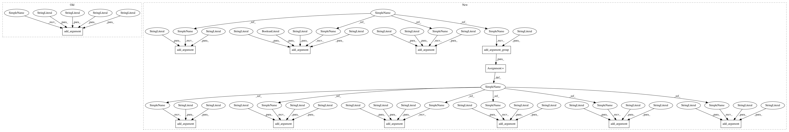

f344df034cb674e198996da63d430287394242bd,cnvlib/commands.py,,,#,1442
Before Change
P_import_picard.add_argument("targets", nargs="*", default=["."],
help=Sample coverage .csv files (target and antitarget), or the
directory that contains them.)
P_import_picard.add_argument("-d", "--output-dir", default=".",
help="Output directory name.")
P_import_picard.set_defaults(func=_cmd_import_picard)
// import-seg ------------------------------------------------------------------
After Change
return np.percentile(bins["log2"], [2.5, 97.5])
P_segmetrics = AP_subparsers.add_parser("segmetrics", help=_cmd_segmetrics.__doc__)
P_segmetrics.add_argument("cnarray",
help=Bin-level copy ratio data file (*.cnn, *.cnr).)
P_segmetrics.add_argument("-s", "--segments", required=True,
help="Segmentation data file (*.cns, output of the "segment" command).")
P_segmetrics.add_argument("--drop-low-coverage", action="store_true",
help=Drop very-low-coverage bins before segmentation to avoid
false-positive deletions in poor-quality tumor samples.)
P_segmetrics.add_argument("-o", "--output",
help="Output table file name.")
P_segmetrics_stats = P_segmetrics.add_argument_group(
"Statistics available")
P_segmetrics_stats.add_argument("--stdev", action="store_true",
help="Standard deviation.")
P_segmetrics_stats.add_argument("--mad", action="store_true",
help="Median absolute deviation (standardized).")
P_segmetrics_stats.add_argument("--iqr", action="store_true",
help="Inter-quartile range.")
P_segmetrics_stats.add_argument("--bivar", action="store_true",
help="Tukey"s biweight midvariance.")
P_segmetrics_stats.add_argument("--ci", action="store_true",
help="Confidence interval (by bootstrap).")
P_segmetrics_stats.add_argument("--pi", action="store_true",
help="Prediction interval.")
P_segmetrics.set_defaults(func=_cmd_segmetrics)
In pattern: SUPERPATTERN
Frequency: 3
Non-data size: 12
Instances
Project Name: etal/cnvkit
Commit Name: f344df034cb674e198996da63d430287394242bd
Time: 2015-12-11
Author: eric.talevich@gmail.com
File Name: cnvlib/commands.py
Class Name:
Method Name:
Project Name: etal/cnvkit
Commit Name: 7cc3d2ae2985701bcd24dc416af654de22b5b9e7
Time: 2016-05-25
Author: eric.talevich@gmail.com
File Name: cnvlib/commands.py
Class Name:
Method Name:
Project Name: etal/cnvkit
Commit Name: 8c9c03c9c7814a9d1d76e87788766ddc36ef7239
Time: 2015-11-07
Author: eric.talevich@gmail.com
File Name: cnvlib/commands.py
Class Name:
Method Name:
Project Name: etal/cnvkit
Commit Name: f344df034cb674e198996da63d430287394242bd
Time: 2015-12-11
Author: eric.talevich@gmail.com
File Name: cnvlib/commands.py
Class Name:
Method Name: